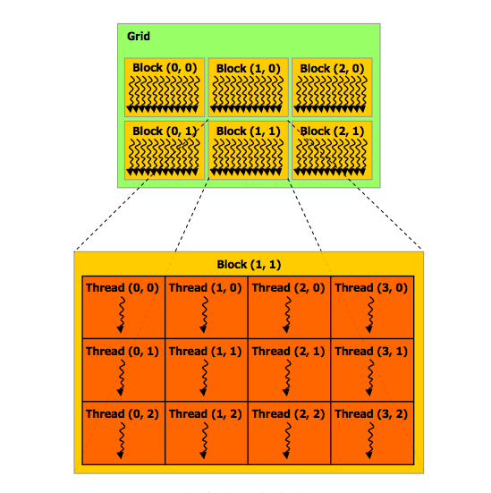

Pieces of the Puzzle¶
Contents¶
CUDA encourages an approach to solving parrallelizable problems that is likely unfamiliar and novel. CUDA also exposes a level of control that can be daunting, but promises the programmer the ability to squeeze out every ounce of performance from their CUDA-enabled GPU. Because of these unique features, learning to understand how to write CUDA programs is akin to solving a jigsaw puzzle — you must grasp a few different concepts before the bigger picture comes together.
A good way to learn CUDA is to compare typical CPU-only code with CUDA code. We’ll show you an example in the next section. Pay attention to what’s different and why; doing so should reveal how programming in CUDA is a unique. After the example, we’ll go into more detail about some of the pieces of the puzzle.
An Illustrative Example¶
Let’s say you have two large and equal-sized vectors (1D arrays) of numbers. You want to add them (by doing pairwise addition), and produce a third vector of the same size. A simple sequential solution to this trivial teaser might look like this:
void add_vectors(int *result, int *a, int *b, int length) {
int i;
for (i=0; i<length; i++) {
result[i] = a[i] + b[i];
}
}
int main(void) {
... // load the input vectors
add_vectors(result, a, b, length);
}
The solutions for the elements in result are computed sequentially – one element is completely computed before moving to the next part. Now imagine that we unroll the loop, turning it into length many lines of code, with the first line reading result[0] = a[0] + b[0], the second result[1] = a[1] + b[1], and so on. Because each of these lines of code are independent of each other, we can use the GPU to run them all at once instead of sequentially. In CUDA, the code to do that might look like:
__global__ void add_vectors_kernel(int *results_dev, int *a_dev, int *b_dev) {
int i = threadIdx.x;
results_dev[i] = a_dev[i] + b_dev[i];
}
int main(void) {
... // load the input vectors
... // copy the input vectors to the GPU's memory
add_vectors_kernel<<<1, length>>>(result_dev, a_dev, b_dev);
}
Now that you’ve seen some CUDA, see if this makes sense (it’s OK if it doesn’t yet). A kernel (indicated by the __global__ keyword) is a bit of code that runs on the GPU. One executes many copies of the kernel at a time by creating a grid of blocks. Each block is composed of threads, where each thread executes a single copy of the kernel. Each thread is given a unique ID so that it can differentiate itself from the other threads.
How the CUDA code is different¶
Lets discuss two of the main differences between the CPU and CUDA versions of the code. The first is the __global__ keyword in front of the add_vectors_kernel function. This keyword identifies the function as a kernel. A kernel is a bit of code that runs on the GPU.
The second difference is the line in the main function that reads add_vectors_kernel<<<1, length>>>(result_dev, a_dev, b_dev). This is how kernel functions are launched from the host CPU. The values in the angle brackets determine how many blocks and threads are used in the grid to execute the kernel. In this case, we have one block with length many threads in that block. We can see that the kernel was written to use a thread’s index (threadIdx.x, in this case) to determine which element of the result it should compute the answer for.
Notice how the code in the kernel is like the inside of our CPU vector-adding loop. In this example, we effectively unroll the loop and give each thread a different addition.
In truth, this is a toy example and, excepting the largest vectors, the problem is solved faster on the CPU than on the GPU. Imagine however, that instead of addition, we were using a more expensive many-instruction operator or that we were adding vectors with many thousands of elements. The benefits of GPU parallelization become clear in those cases.
Execution Configuration¶
Execution configuration is the name given to the parameters inside of the <<< and >>>. kernel_func<<<3, 1000>>>(), for example, will run kernel_func using three blocks of 1,000 threads each, for a total of 3,000 threads. Using integers as those two arguments forces one-dimensional configuration of grid and block sizes. The first execution configuration argument specifies the number of blocks in the grid, and the second argument specifies the number of threads in each block. The division of threads into blocks is significant because threads that are in the same block have access to a small but fast shared memory.
Attention! Be aware of some limitations on grid and block sizes. For example, modern cards (compute capability 2.x) support blocks with no more than 1024 threads. Earlier cards are limited to 512 threads per block. The limit on grid sizes is much harder to reach (no more than 65535 blocks in any of the dimensions x, y, or z.)
If we’d rather have our threads configured in a 20×10 2D configuration, we can do so by specifying our dimensions by using dim3 (a typedef’d structure):
dim3 dimGrid(1); // 1 block
dim3 dimBlock(20, 10, 1); // 200 threads
mat_mult_kernel<<<dimGrid, dimBlock>>>(result_dev, A_dev, B_dev);
This flexibility exists for the programmer’s benefit. Since the location of each thread within the grid is exposed to the kernel by threadIdx.[xyz] and blockIdx.[xyz], we can choose an execution configuration that causes the ... Idx variables to map neatly to our current problem’s data. We might use kernel_func<<<5000, 1000>>> for something involving a five-million long vector (recall the block size limitations), or the above example involving dim3 for a 20×10 matrix.
Note
See the matrix_multiplication.cu example for a demonstration of using threadIdx and blockIdx.

Threads are arranged inside of blocks; blocks are arranged inside of a grid. This image shows a 3×2 grid with 4×3 blocks.
Image source: NVIDIA CUDA Programming Guide v 4.0 (pg. 9)
Memory Management¶
In the previous examples, we have explained how to setup an execution configuration and launch a kernel. In order to run a kernel though, you must first understand how to manage memory between the device and host. To put it simply, there is no memory shared between the host and device, so data must be explicitly transferred. Transferring data to a CUDA device is a two-step process that requires we allocate space for the data and then copy the data into that space. A simple CUDA program that does one calculation will usually have four steps:
- allocate memory on the CUDA device
- copy data from the host to the allocated device memory
- invoke the kernel
- copy the results from the device to the host
To give an example of how this is achieved we will look back at the vector addition example:
__global__ void add_vectors_kernel(int *results_dev, int *a_dev, int *b_dev) {
int i = threadIdx.x;
results_dev[i] = a_dev[i] + b_dev[i];
}
int main(void) {
int length = 5;
int a[] = {0, 1, 2, 3, 4};
int b[] = {5, 6, 7, 8, 9};
int results[length];
int *a_dev, *b_dev, *results_dev;
// 1. Allocate memory space on CUDA device
cudaMalloc((void**)&a_dev, sizeof(int) * length);
cudaMalloc((void**)&b_dev, sizeof(int) * length);
cudaMalloc((void**)&results_dev, sizeof(int) * length);
// 2. Copy host data to space allocated on the device
cudaMemcpy(a_dev, a, sizeof(int) * length, cudaMemcpyHostToDevice);
cudaMemcpy(b_dev, b, sizeof(int) * length, cudaMemcpyHostToDevice);
// 3. Execute the kernel
add_vectors_kernel<<<1, length>>>(result_dev, a_dev, b_dev);
// 4. Copy device data (the result) back to the host
cudaMemcpy(results, results_dev, sizeof(int) * length, cudaMemcpyDeviceToHost);
}
Now hopefully that example isn’t too overwhelming. There are really only two new CUDA functions in this example. Here are their definitions:
cudaError_t cudaMalloc (void **devPtr, size_t size)
cudaError_t cudaMemcpy(void *dst, const void *src, size_t size, enum cudaMemcpyKind kind)
We won’t discuss the return types, but know that they provide a way of checking the success of the operation.
The cudaMalloc is similar to a standard C malloc call, but instead of capturing it’s return value to store the pointer to allocated memory, we pass in the address of a pointer; cudaMalloc will write the correct pointer to that location. It is important to stress that the only difference between pointers from malloc and cudaMalloc is that they only make sense on their respective devices (host vs device). This means that dereferencing a device pointer on the host doesn’t make sense! This also explains why the convention to add _d or _dev to device pointers.
For the cudaMemcpy() function, know that dst and src are pointers which specify where to put (dst) the data that you are copying (at src) and that kind is a memory copy type (direction). A few different directions are available, including: cudaMemcpyDeviceToHost, cudaMemcpyHostToDevice, and even cudaMemcpyDeviceToDevice.